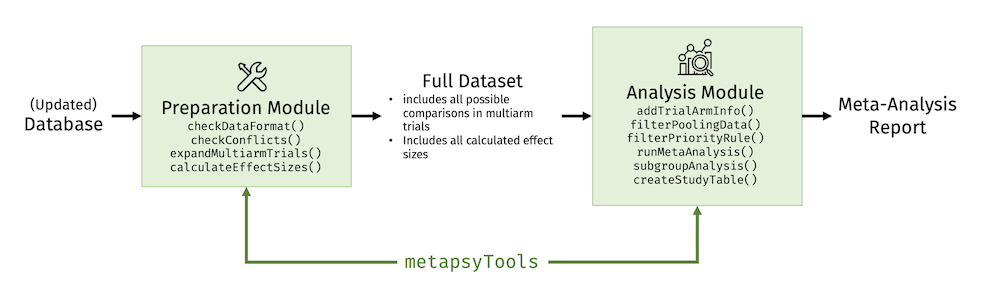

How to get started with the metapsyTools
package.
 Introduction
Introduction
The metapsyTools package is part of the Metapsy project.
Functions included in the package can be used to run meta-analyses of
Metapsy databases, or
of databases that adhere to the same data
standard, “out of the box” using R.
The package also contains a set of tools that can be used to prepare meta-analytic data sets based on the Metapsy data standard, and to calculate effect sizes (Hedges’ and risk ratios, ).
The package consists of two modules:
- A module to check the data format and calculate effect sizes for all possible study comparisons (preparation module);
- A module to select relevant comparisons for a specific meta-analysis, calculate the results (including subgroup, meta-regression, and publication bias analyses), and generate tables (analysis module).
The idea is to use the two modules in different contexts. For example, the preparation module can be used every time the database is updated to gather all information, calculate effect sizes, and bring the data into a format suitable for further analyses.
Prepared data sets that follow the Metapsy data standard build the basis for the analysis module. Researchers simply have to filter out the comparisons that are relevant for the investigation, and can then use functions of the package to run a full meta-analysis, including sensitivity and subgroup analyses.

Important: The preparation module requires a
familiarity with the general structure of the database, as well as
intermediate-level knowledge of R and the metapsyTools
package itself, in order to diagnose (potential) issues. We advise that
the preparation step (i.e. checking the data format and calculating
effect sizes each time the database is updated) should be conducted by a
person with some proficiency in R & data wrangling. The analysis
module, on the other hand, should be usable by all researchers.
The companion package of metapsyTools is metapsyData (data.metapsy.org).
Using metapsyData, meta-analytic databases can be
automatically downloaded into your R environment. Databases retrieved
using metapsyData can directly be analyzed using
metapsyTools.
For an in-depth introduction to the metapsyTools
package, please visit the Get
Started page online.